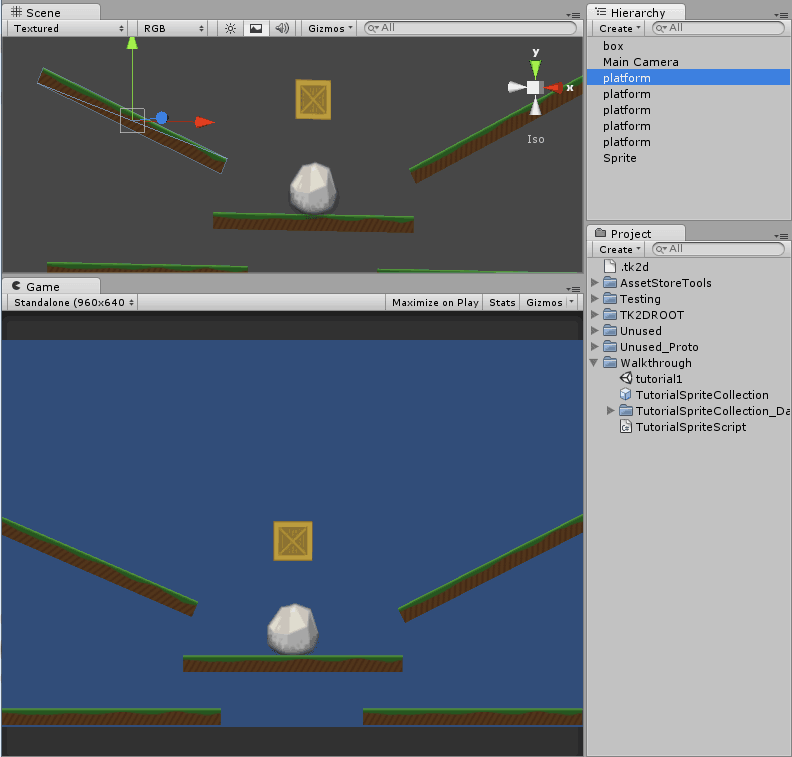
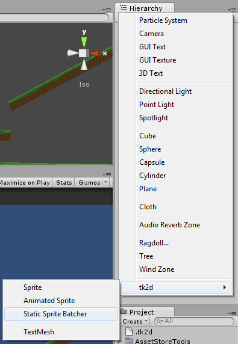
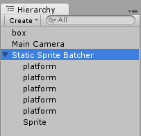
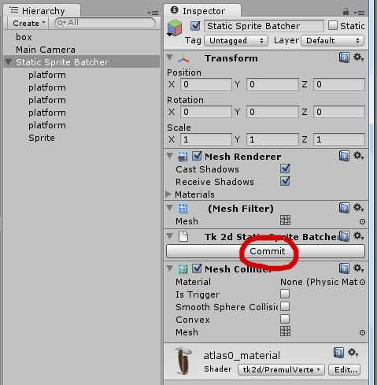
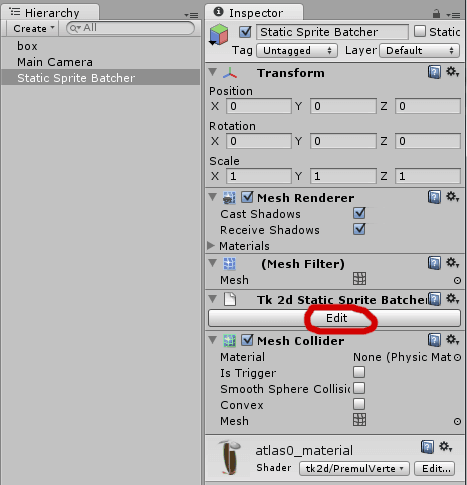

Documentation
Script Reference
Forum
Documentation
Script Reference
Forum
Before we proceed to use the static sprite batcher, we will first create some more sprites in the scene. Proceed to create a few more sprites in the scene so it looks like this:

As you can imagine, the Hierarchy window is going to get more and more complex the more sprites we add, and performance is going to slowly degrade as there will be a large number of GameObjects with static sprites which aren't doing anything.
In order to get around this, we can use the Static Sprite Batcher. This will let you batch a large number of sprites, which are currently limited to one Sprite Collection, into one large mesh. Physics colliders will automatically be baked down as well.
Create a Static Sprite Batcher by clicking "Create > tk2d >Static Sprite Batcher" in the Hierarchy Window.

Drag the background sprites into the Static Sprite Batcher

Click commit on the Static Sprite Batcher. Observe that all the sprites you created have been removed from the hierarchy, and only the StaticSpriteBatcher object remains.

Whenever you need to edit the background sprites, simply click on Edit in the StaticSpriteBatcher and your original sprites will reappear. Don't forget to commit your changes after editing them.

As of 2D Toolkit 2.0, you can now add all sprite types, and text meshes into a static sprite batcher. You are also no longer limited to sprites being from one collection. However, keep in mind that adding sprites from different collections, atlases or materials will increase the number of draw calls.